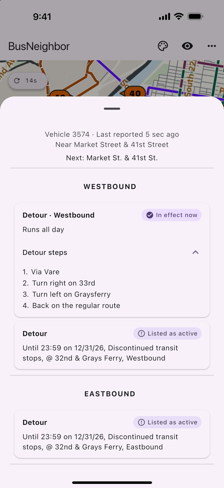
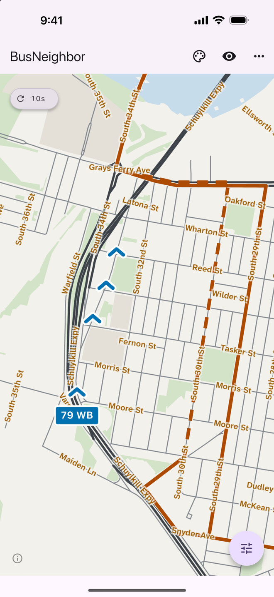
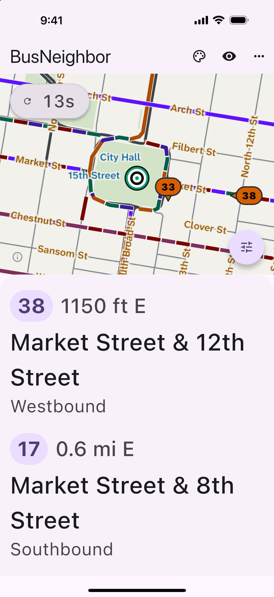
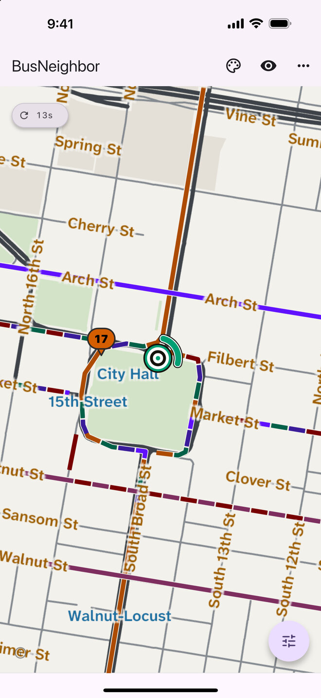

Detours you can read
New in version 1.1
When a route is detoured, BusNeighbor shows where the bus goes instead, in words and on the map.
- Each detour is a card that lists the streets the bus takes instead, turn by turn, and says whether it's in effect now.
- Marks on the map show which way recent buses actually went, and the details say where they left the regular route.
- Each route you pick is drawn as a line in one of six colors, under the street names so the names stay readable.
- If the live feed stops, the map says so and shows when the last update arrived.


Made to be read, not just seen
BusNeighbor is designed for riders who are blind or have low vision, and that makes it clearer for everyone.
- Every control works with screen readers, including VoiceOver and TalkBack, and the nearest vehicles can be read out as a list: route, intersection, and distance.
- Pan the map, and BusNeighbor announces the nearest stop and how far away it is. Centered on you, it also says whether the stop is ahead, behind you, or to your side, and your location marker shows which way you're facing.
- Twelve map palettes tuned for contrast, and compatibility with large text throughout.
- The app always tells you how old the data is, and a bus that stops reporting looks different from one that's live.


No ads, no tracking
- No accounts
- No ads
- No analytics
- No tracking
Location is optional and is never requested when the app opens. Your position and the direction you're facing stay on your phone. The privacy policy is short and in plain English.
Who made this
I'm Joe Mirarchi (Joseph Dante, if you ask my mother). I ride the bus back and forth to Center City, and I built BusNeighbor to feel more confident taking the bus, with a realistic, constantly updating view of where my ride is. The transit apps I'd tried were too complicated, too confusing, or too unreliable.
Then I met a friend through C.O.D.E. Philly who installed the app the first time we met, but needed accessibility features to use it. So I rose to the challenge.
I'm an enterprise backend engineer who works in Java and Python, and I learned Flutter and Dart to build this app. Before engineering, I researched and analyzed public information. Advocating for people with disabilities is important to me. I saw a gap in what was available to serve the community, and I wanted to help.